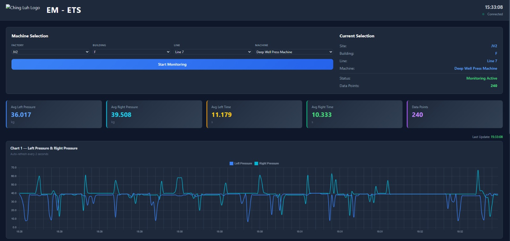
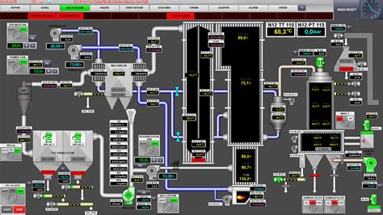

"Continuous operational surveillance with instant anomaly detection."
From machine-level sensor data to plant-wide situational awareness — a unified monitoring layer that surfaces the right information, to the right person, at the right moment.

Per-machine dashboards display live sensor readings, rolling trend charts, and KPI indicators — auto-refreshed every 2 seconds. Factory, building, line, and machine selection give operators instant drill-down to any asset in the plant.

Full plant process diagrams with live sensor values overlaid at every node. Operators see the entire process topology — valves, temperatures, flows, pressures — and can identify deviations in context, not in isolation.
Multiple simultaneous alerts are automatically clustered to their root cause — eliminating alert storms and giving operators a single, actionable event instead of 12 disconnected notifications.
Context-aware push notifications delivered to any device — with severity grade, affected asset, and recommended action pre-populated. The right person is informed before they even reach their desk.
Six capabilities that separate operational intelligence from basic monitoring — designed for the complexity of industrial environments.
Native connectivity to OPC-UA, Modbus TCP/RTU, MQTT, PROFINET, EtherNet/IP, and REST APIs. Any sensor, any PLC, any SCADA system — integrated without custom middleware.
OPC-UA · Modbus · MQTT · RESTAlerts are generated against learned operational context — not static thresholds. The system suppresses alerts during known state changes (startups, shutdowns, mode switches), reducing false positives by 95%.
95% False Positive ReductionEvery confirmed incident triggers an automated RCA workflow — correlating contributing sensor signals, identifying the probable root cause, and logging the causal chain for engineering review.
Auto-RCA · Causal Chain LoggingBy integrating with the Predictive Operations layer, alerts are issued before anomalies breach thresholds — based on trajectory and pattern, not current state. Response replaces reaction.
Pre-Threshold Early WarningReal-time push notifications to iOS and Android with severity, asset ID, recommended action, and one-tap escalation. On-call engineers are informed within seconds of any incident — anywhere in the world.
iOS · Android · Web · SMSLong-term trend visualization across all sensor streams — with anomaly annotation, maintenance event overlay, and pattern recognition to identify recurring failure modes and systemic degradation.
Pattern Recognition · Long-Term Trends"An alarm that arrives
after the damage is
not an alarm. It's a report."
A six-layer data pipeline — from sensor to screen — engineered for industrial reliability, latency, and scale.
Industrial IoT gateways installed at the machine level. Collect raw sensor data via OPC-UA, Modbus, MQTT at configurable intervals (1ms–60s). Pre-process and timestamp locally — zero data loss even during network disruption.
High-performance time-series storage optimized for industrial sensor data ingestion rates. Retains full-resolution historical data for trend analysis, model training, and regulatory compliance — with automated compression for long-term archives.
Real-time computation on live data streams — running anomaly detection models, threshold evaluation, rate-of-change calculations, and multi-sensor correlation in sub-second latency. Handles millions of data points per second.
Intelligent alert clustering and deduplication — grouping simultaneous alerts to their probable root cause. Suppresses alarm storms, escalates by severity, and routes each event to the correct responder with full context attached.
Multi-channel delivery — push notification (iOS/Android), in-app dashboard, SMS, email, and webhook integration to CMMS, ERP, or ticketing systems. Escalation logic ensures no alert goes unacknowledged.
Long-term trend dashboards, OEE reports, downtime analysis, energy consumption tracking, and audit logs — accessible via web browser or mobile app. Exportable to PDF, Excel, or data warehouse for management reporting.
Four sectors where continuous monitoring changes the outcome — from plant floor to power grid to underground mine.
Overall Equipment Effectiveness is the single most important KPI in manufacturing — but most plants see it only in yesterday's report. Real-time OEE monitoring changes the economics of every shift.
Line 3 availability drops from 94% to 87% at 10:15 on a Tuesday. The monitoring system identifies a micro-stoppage pattern on Machine 7 — 14 stops under 2 minutes each, invisible in daily OEE reports. The stream processing engine flags it within 4 minutes. The team resolves a feeder jam before it escalates to a line stop.
Power grids operate at tolerances that leave no room for delayed awareness. Frequency deviations, voltage instability, and transformer thermal events require seconds-level response — not minutes.
A transformer's thermal model detects a 3.2°C above-expected temperature rise during a demand surge. The alert correlation engine links it to three upstream load events — issuing a pre-failure warning 6 minutes before the thermal limit would be breached. Load rerouting is triggered automatically.
Mining environments demand safety-critical monitoring across gas levels, atmospheric conditions, structural integrity, and personnel location — with zero tolerance for response latency.
CO₂ levels in Level 4 begin a gradual 15-minute climb, still well below any DCS static alarm threshold. The stream processing engine detects the rate-of-change anomaly and correlates it with reduced airflow on Fan Circuit B. A warning is issued 22 minutes before any threshold breach — ventilation is restored before personnel are at risk.
Commercial and industrial buildings waste 20–30% of energy consumption through undetected HVAC inefficiencies, lighting waste, and unoccupied zone conditioning. Monitoring turns waste into savings.
The monitoring system detects that HVAC Zone C is conditioning to setpoint 22°C while occupancy sensors show zero personnel in the zone for 3.5 hours. The energy optimization alert triggers an automatic setback to 26°C — immediately. Compressor runtime drops 34% for the zone within the hour.
Four outcomes that define what operational intelligence delivers — measured across deployments, not projections.
Context-aware alerting eliminates the noise that desensitizes operations teams. Every alert that reaches a person is actionable — not a condition they've learned to ignore.
From event occurrence to the right person being informed — 60% faster than manual monitoring processes. Automated RCA means response starts with a solution, not a diagnosis.
Real-time consumption monitoring surfaces inefficiencies invisible to periodic audits. Automated setpoint adjustments and waste detection translate directly to utility cost reduction.
Every asset, every sensor, every process variable — visible in a single unified interface. No blind spots. No monitoring gaps. No discovering problems through production quality reports.